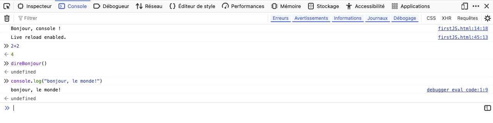
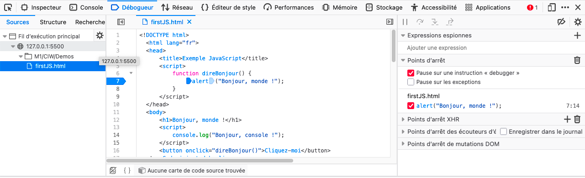
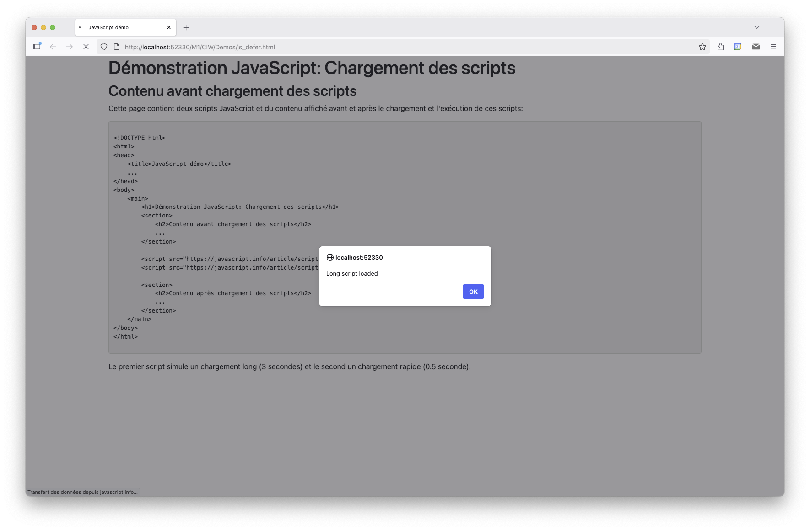
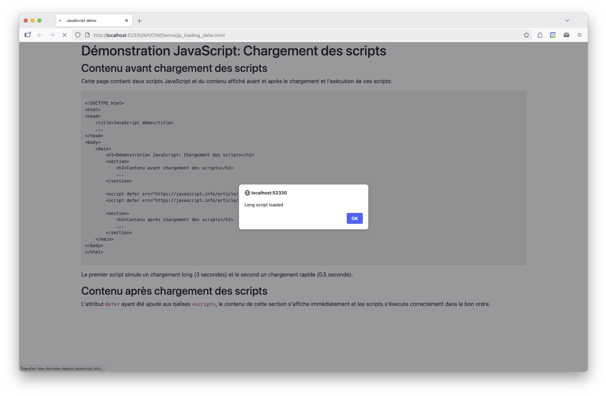

Conception d'Interface Web
JavaScript
Présentation de JavaScript
- Structuration/organisation du contenu (texte, images, vidéos) : HTML
- Présentation (visuelle) du contenu : CSS
- Rendre ce contenu interactif : JavaScript

Présentation de JavaScript
- Langage de programmation interprété
- S'exécute dans un environnement équipé d'un moteur JavaScript (e.g. navigateur)
- Principalement utilisé côté client (mais il existe des environnements côté serveur, comme Node.js)
- Le seul langage de programmation activé par défaut dans les navigateurs
- Permet de:
- Manipuler le contenu des pages web programmatiquement
- Réagir aux événements utilisateur (clics, saisie de texte, etc.)
- Communiquer avec des serveurs distants (AJAX)
Bref historique
- 1995: création par Brendan Eich pour Netscape Navigator
- 1997: standardisation sous le nom ECMAScript (ES)
- 1999: IE propose son propre langage JScript (début du déclin de JS)
- 2008: Compilateur JIT (chrome). Les moteurs deviennent beaucoup plus performants
- 2009: ES5, retour de JS au premier plan
- 2015: ES6, évolution majeure, ajout de nombreuses fonctionnalités modernes
- Depuis 2016: nouvelles versions annuelles (ES7, ES8, ...)
Aujourd'hui (2025), 98,9% des sites web utilisent JavaScript (source)
Compilation Just-In-Time
- Initialement, langage interprété, mais aujourd'hui les moteurs utilisent la compilation Just-In-Time (JIT)
- Le moteur analyse le code du script
- Le compile en code machine natif
- Exécute ce code aussi rapidement que possible
- Permet de nombreuses optimisations à l'exécution
- Exemples de moteurs JavaScript:
- V8 (Chromium et donc Chrome, Edge, Opera, Brave)
- SpiderMonkey (Firefox)
- JavaScriptCore (Safari)
- Chakra (IE et anciennement utilisé par Edge)
Plus d'infos: https://fr.wikipedia.org/wiki/Moteur_JavaScript
Fonctionnement de JavaScript
- Intégrer du code JS dans une page HTML
<!DOCTYPE html>
<html lang="fr">
<head>
<title>Exemple JavaScript</title>
<script>
function direBonjour() {
alert("Bonjour, monde !");
}
</script>
</head>
<body>
<h1>Bonjour, monde !</h1>
<script>
console.log("Bonjour, console !");
</script>
<button onclick="direBonjour()">Cliquez-moi</button>
<script src="mon_script.js"></script>
</body>
</html>
Fonctionnement de JavaScript
- Chargement et exécution de la page dans un navigateur
Fonctionnement de JavaScript
- Si besoin, déboguer via les outils du navigateur:
- Console intéractive 
- Débogueur 
Intégration de JS dans une page HTML
- Balise
<script>dans le<head>ou le<body> - Contient du code JavaScript ou
srcpour un fichier externe - Exemples:
<script>
let nom = prompt("Quel est votre nom ?");
let show = confirm("Voulez-vous afficher votre nom ?");
if (show) {
alert("Bonjour " + nom);
document.write("<p>Bonjour " + nom + "</p>");
} else {
alert("D'accord, au revoir");
}
console.log("Le nom saisi est: " + nom);
</script>
<script src="mon_script.js"></script>
Intégration de JS dans une page HTML
- HTML autorise aussi les scripts inline
<head>
<script>
function dialog() {
alert("JavaScript dans une fonction");
}
</script>
</head>
<body>
<a href="Javascript:dialog()">Message d'alerte</a>
<button onclick="dialog()">Say hello!</button>
</body>
onload, onclick, onchange, etc.)Chargement des scripts
- Chargement d'une page HTML par le navigateur:
- Réception et analyse (parsing)
- Construction du DOM (Document Object Model)
- Construction du CSSOM (CSS Object Model)
- Rendu et affichage de la page
- Étape 2 exécutée au fil de la lecture du document HTML
- Si lien vers une ressource externe (CSS, JS, images) la construction du DOM est interrompue
- Le téléchargement, le chargement et l'exécution des scripts JS sont bloquants
- Peut considérablement impacter les temps de chargements et l'expérience utilisateur
Chargement des scripts
Exemple
Chargement des scripts
- Solutions pour éviter le blocage:
- Placer les
<script>en fin de<body> - Attribut
defer: script chargé en parallèle et exécuté après la construction du DOM - Attribut
async: script chargé en parallèle et exécuté dès qu'il est prêt - avec
defer, l'ordre des scripts est préservé et le contenu s'affiche avant l'exécution des scripts - avec
async, l'ordre des scripts n'est pas préservé et les scripts sont exécutés indépendamment du rendu
Chargement des scripts
Exemple
Variables
- JS est faiblement typé: les variables n'ont pas de type fixe
- Déclaration
let nom;
nom = "John Doe";
let ville = "Rouen";
const PI = 3.14159;
PI = 42; // Erreur
let variable = 42;
variable = "Bonjour";
variable = true;
Variables
- Avant 2015:
var age = 30;
age = 31;
console.log(age); // affiche "undefined" (pas d'erreur)
var age = 30;
for (var i = 0; i < 11; i++) {
var sum = i * 3.14;
}
console.log(i); // affiche 11
console.log(sum); // affiche 31.4
Types primitifs
Boolean: valeurstrueoufalse
let ok = true;
let isGreater = (5 > 3); // true
Number: valeurs numériques (entier ou décimaux) compris entre Number.MIN_VALUE et Number.MAX_VALUE + 3 valeurs particulières (NaN, Infinity, -Infinity)
let notANumber = 0 / 0; // NaN
let inf = 1 / 0; // Infinity
String: chaîne de caractères (délimitées par des guillemets simples, doubles ou backticks)
let nom = "John Doe";
let message = `Bonjour, ${nom}!`;
Undefined: valeur unique undefined, qui est la valeur par défaut des variables non initialiséesObjets
- JS est un langage orienté objet (orienté prototype)
- Type
Object: collection de paires clé/valeur
let personne = {
nom: "John Doe",
age: 30,
ville: "Rouen"
};
console.log(personne.nom); // "John Doe"
console.log(personne["age"]); // 30
let empty = {}; // objet vide
let empty2 = new Object(); // équivalent
null: absence intentionnelle de valeurObjets
- Les objets sont manipulés par référence (comme en Java)
let a = { x:3.0, y:5.0 };
let b = { x:2.0, y:0.0 };
let c = b;
let d = null;
Objets prédéfinis
- JS prédéfinit des "sous-types" d'
Object
| Type | Description | Exemples |
|---|---|---|
Array |
Tableau (liste ordonnée d'éléments) | [1, 2, 3], ["a", "b", "c"] |
Date |
Date et heure | new Date(), new Date("2023-10-01") |
RegExp |
Expressions régulières | /abc/, new RegExp("abc") |
Error |
Objets d'erreur (exceptions) | new Error("message d'erreur") |
Math |
Objets mathématiques (fonctions et constantes) | Math.PI, Math.sqrt(4) |
Function |
Fonctions | function() {}, const f = () => {} |
Liste complète ici: MDN Web Docs
Objets prédéfinis
Tableaux
- Peut contenir n'importe quels types d'éléments
let nombres = [1, 2, 3, 4, 5];
let lettres = ["a", "b", "c"];
let mixte = [1, "deux", true, {x:3}, [1,2,3]];
console.log(nombres[0]); // 1
nombres[1] = 42;
console.log(nombres.length); // 5
nombres.push(6); // ajoute 6 à la fin
nombres.pop(); // enlève le dernier élément
nombres.shift(); // enlève le premier élément
nombres.unshift(0); // ajoute 0 au début
Opérateurs et instructions de contrôle
- Les mêmes que C/Java
- Arithmétiques:
+,-,*,/,% - Comparaison:
==,!=,<,>,<=,>= - Logiques:
&&,||,! - Conditionnelle:
if,else,switch - Boucles:
for,while,do...while - Opérateur ternaire:
condition ? expr1 : expr2 - + quelques uns spécifiques à JS
- Exposant:
** - Comparaison stricte:
===,!==(vérifie aussi le type) - Opérateur nullish coalescing:
a ?? b(retourneasi non null/undefined, sinonb)
Conversion implicites
+devient l'opérateur de concaténation si un des opérandes est unstring
let s = "my" + "string"
console.log(s); // "mystring"
console.log("1" + 2); // "12"
console.log(1 + "2"); // "12"
console.log(2 + 2 + "1"); // "41"
console.log("50" + null); // "50null"
console.log("2" - 1); // 1
console.log("2" + 1); // "21"
console.log(3 == "3"); // true
console.log(3 === "3"); // false
Toutes les conversions implicites: https://www.w3schools.com/js/js_type_conversion.asp
Fonctions
- Déclaration:
function name(par1[, par2[, ..., parN]]) {
/* corps de la fonction */
...
[return valeur;]
}
[ ] est optionnelreturn, la fonction retourne undefinedFonctions
- Invocation: les arguments sont facultatifs. En cas d'absence, les paramètres sont
undefined
function optional(par1, par2) {
console.log("par1=" + par1); // affiche la valeur de par1 dans la console
console.log("par2=" + par2); // affiche la valeur de par2 dans la console
}
optional(); // affichage "par1=undefined" puis "par2=undefined"
optional("Hello"); // affichage "par1=Hello" puis "par2=undefined"
function withDefault(par1, par2 = 42) {
console.log("par1=" + par1);
console.log("par2=" + par2);
}
withDefault("Hello"); // affichage "par1=Hello" puis "par2=42"
withDefault("Hello", 7); // affichage "par1=Hello" puis "par2=7"
Fonctions
- Dans une page HTML, les déclarations doivent précéder leur utilisation
<!DOCTYPE html>
<html lang="fr">
<head>
...
<script src="fonction1.js"></script>
</head>
<body>
<script>
console.log(fonction1()); // ok
console.log(fonction2()); // erreur
</script>
<script src="fonction2.js"></script>
</body>
</html>
Fonctions
- Dans un fichier
.js, elles peuvent être déclarées dans n'importe quel ordre
function cube(x) {
return x * square(x);
}
function square(x) {
return x * x;
}
console.log(cube(3)); // 27
Fonctions expressions
- En JS, les fonctions sont des types d'objets
- On peut affecter une fonction à une variable
function sayHello() {
console.log( "Hello" );
}
// autre syntaxe équivalente:
let sayHello = function() {
console.log( "Hello" );
};
sayHello(); // invocation identique pour les deux syntaxes
; à la finFonctions expressions
- On peut affecter une fonction à plusieurs variables (référence)
let sayHelloAgain = sayHello;
sayHelloAgain(); // même résultat que sayHello()
function callFunction(f) {
f();
}
callFunction(sayHello); // affiche "Hello"
callFunction(
function() {
console.log("Hello from anonymous function");
}
);
Callback
- Une fonction passée en argument d'une autre fonction est appelée un callback
function ask(question, yes, no) {
if (confirm(question)) yes()
else no();
}
function showOk() {
alert( "You agreed." );
}
function showCancel() {
alert( "You canceled the execution." );
}
ask("Do you agree?", showOk, showCancel);
ask("Do you agree?",
function() { alert("You agreed."); },
function() { alert("You canceled the execution."); }
);
Fonction fléchée
- Syntaxe plus concise pour les fonctions expressions
let sum = (a, b) => a + b;
console.log( sum(1, 2) ); // 3
let square = x => x * x;
console.log( square(3) ); // 9
let sayHello = () => console.log("Hello");
sayHello(); // Hello
return si besoin
let sumAndLog = (a, b) => {
let result = a + b;
console.log(result);
return result;
};
sumAndLog(2, 3); // affiche 5 et retourne 5
Deux JavaScript: "vieux" vs "moderne"
- Avant ES5:
- très permissif et mécanismes exotiques (e.g. hoisting)
- prise en charge inégale des navigateurs
- code souvent verbeux et difficile à maintenir
- ES5:
- évolution majeures de fonctionnalités existantes
- mais introduit des problèmes de rétrocompatibilité (
mode strict) - Depuis ES6 (2015) et versions ultérieures:
- ajout de nombreuses fonctionnalités (e.g. classes, modules, promesses, async/await, etc.)
- amélioration de la lisibilité et de la maintenabilité du code
- adoption généralisée mais non prises en charges par les "vieux" navigateurs
Deux JavaScript: "vieux" vs "moderne"
- Par défaut, les navigateurs désactivent les fonctionnalités modernes non compatibles avec le "vieux" JS
- Pour activer le JS "moderne": directive
use strictà inclure au début d'un script
"use strict";
// code JS ci-dessous peut utiliser les fonctionnalités modernes
let x = 3.14;
...
use strict est souvent omise car implicitement activée par des scripts modernesTranspiler et polyfills
- Problèmes de retrocompatibilité prépondérants en JS
- Solutions:
- Transpiler: outil qui convertit du code JS moderne en code compatible avec les anciens navigateurs (e.g. Babel)
- Polyfills: bibliothèques qui ajoutent des fonctionnalités modernes aux anciens navigateurs
// avant d'exécuter le transpileur:
height = height ?? 100; // opérateur introduit en 2020
// après avoir exécuté le transpileur:
height = (height !== undefined && height !== null) ? height : 100;
if (!Math.trunc) { // si une telle fonction n'existe pas
Math.trunc = function(number) {
return number < 0 ? Math.ceil(number) : Math.floor(number);
};
}
Permissivité
- JS est un langage très permissif et piegeux: wtfjs ou
- Un code JS peut vite devenir illisible, incompréhensible et peu performant
- Solutions: utilisez des guides de styles, des linters, des IDE dédiés, un débogueur
Liens utiles
- JavaScript.info: Un site très complet et abordable pour apprendre JavaScript
- Web.dev: Séries d'articles pour approfondir JavaScript
- MDN Web Docs: Références et tutoriels sur JavaScript
- freeCodeCamp: Exercices interactifs
- CodeWars: Exercices de code
- The Net Ninja: Vidéos pédagogiques
- ESLint: un des linters les plus populaires